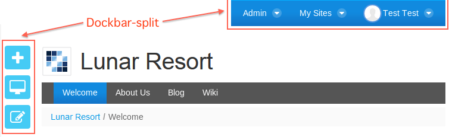

Liferay DXP 6.2 theme templates and the new DXP version theme templates are essentially the same. Here are the main changes:
Velocity templates were deprecated in Liferay Portal CE 7.0 and are now removed in favor of FreeMarker templates in Liferay DXP. Below are the key reasons for this move:
FreeMarker is developed and maintained regularly, while Velocity is no longer actively being developed.
FreeMarker is faster and supports more sophisticated macros.
FreeMarker supports using taglibs directly rather than requiring a method to represent them. You can pass body content to them, parameters, etc.
The Dockbar has been replaced and reorganized into a set of three distinct menus:
The Product Menu: Manage Site and page navigation, content, settings and pages for the current Site, and navigate to user account settings, etc.
The Control Menu: Configure and add content to the page and view the page in a simulation window.
The User Personal Bar: Display notifications and the user’s avatar and name.

Figure 1: The Dockbar was removed and must be replaced with the new Control Menu.
Start by converting your Velocity theme templates to FreeMarker. You can refer
to Apache’s
FreeMarker documentation
for help. Common Liferay DXP FreeMarker variables and macros can be found in
FTL_liferay.ftl
The Gulp upgrade task reports the
required theme template changes in the log. For example, here are the 6.2 to 7.0
upgrade log and 7.0 to 7.1 upgrade logs for the Lunar Resort theme:
----------------------------------------------------------------
Liferay Upgrade (6.2 to 7)
----------------------------------------------------------------
File: portal_normal.ftl
Warning: <@liferay.dockbar /> is deprecated, replace with
<@liferay.control_menu /> for new admin controls.
Warning: not all admin controls will be visible without
<@liferay.control_menu />
Warning: ${theme} variable is no longer available in Freemarker
templates, see https://goo.gl/9fXzYt for more information.
[18:57:23] Finished 'upgrade:log-changes' after 5.61 ms
[18:57:23] Finished 'upgrade' after 19 s
----------------------------------------------------------------
Liferay Upgrade (7.0 to 7.1)
----------------------------------------------------------------
Renamed aui.scss to clay.scss
[19:16:54] Finished 'upgrade:log-changes' after 2.53 ms
[19:16:54] Finished 'upgrade' after 16 min
The log warns about removed and deprecated code and suggests replacements when applicable.
In this section you’ll learn how to update various theme templates to the new DXP version.